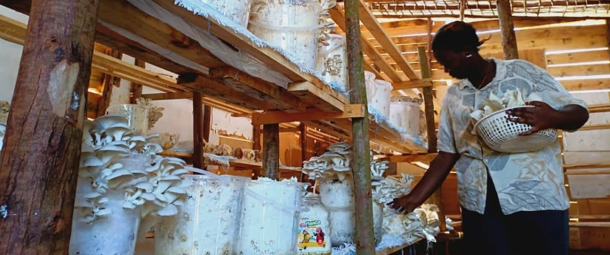

News and Updates
The Mushroom Project at Nakivale Refugee Settlement
Unidos are in the early stages of an exciting journey to find further sustainable solutions through mushroom cultivation...
Read More →